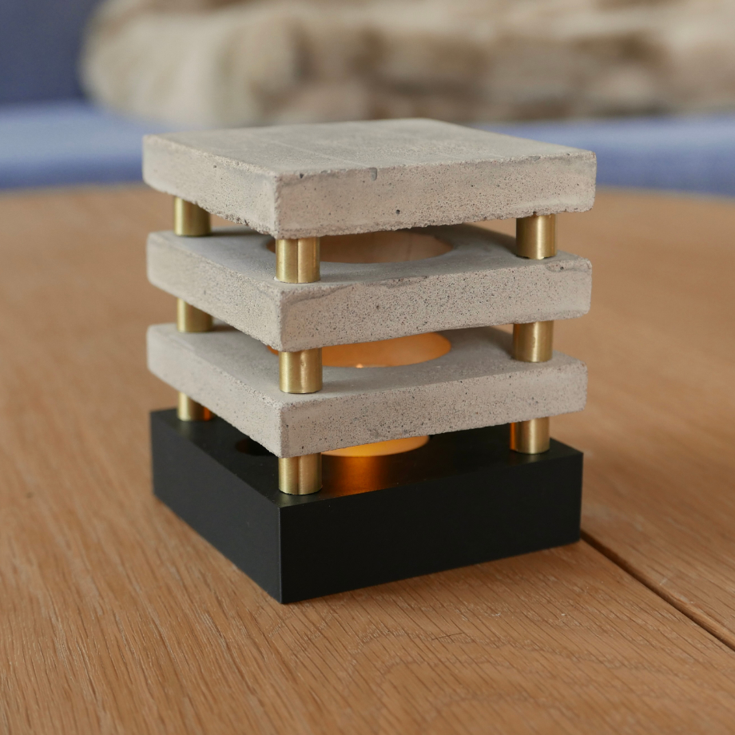
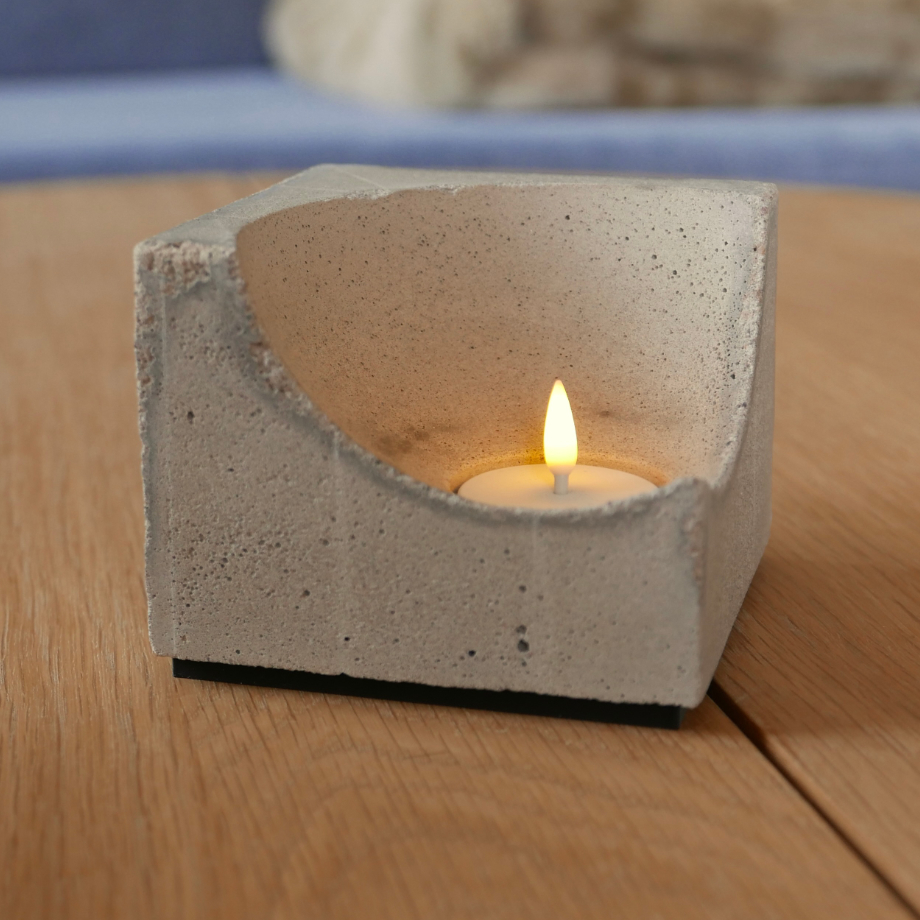
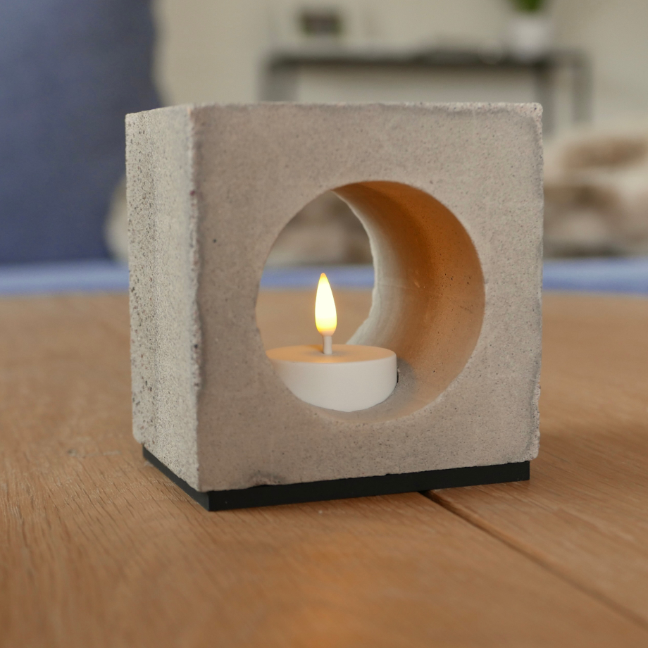
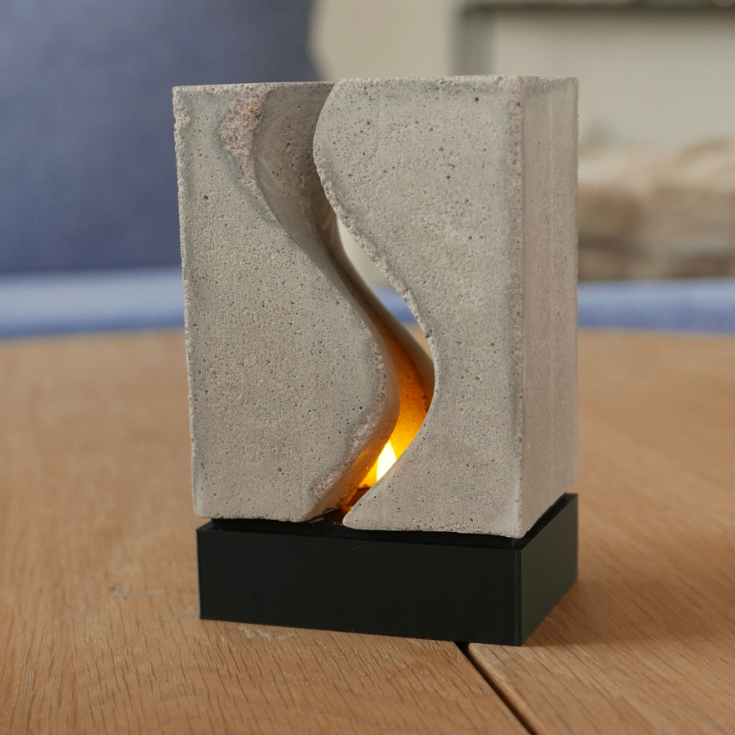
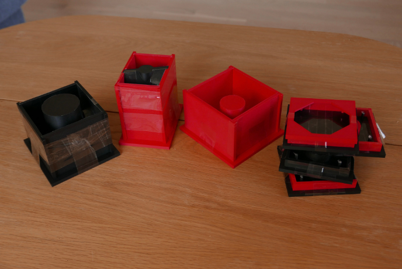
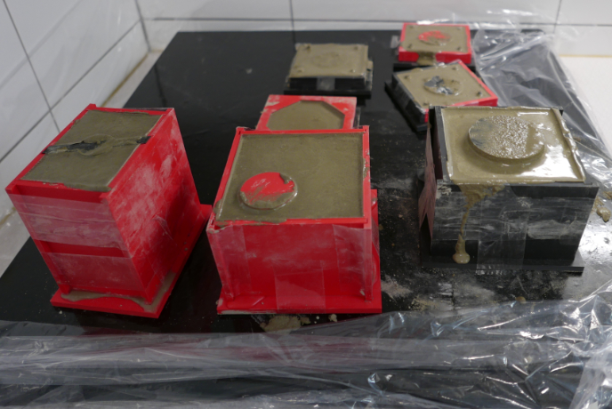

Jag har fortfarande kvar en jäkla massa betong sen Betongklump och Nyckelhållare så tänkte de va dags att göra något mer i betong
Köpte några LED ljus från IKEA så ville göra något med dom så varför inte gjuta lite lyktor





Jag började med att designa hur jag ville att lyktorna skulle se ut och sen 3D printade jag en form för varje lykta
Gjorde fortfarande några fel med designen på formen men de va mycket bättre än sist iallafall
Jag tejpade insidan på alla formarna med packtejp och de släppte helt otroligt enkelt så de blir de nästa gång med

Jag blandade betongen med lite mer vatten än sist så den va lite enklare att ha att göra med
Jag lät sedan de sitta i formen i 2 dygn och sen fick de stå utanför formen i en vecka innan jag satte på plastgrejerna
Skulle kanske tänkt lite mer på monteringen på vissa av dom men de blev helt okej